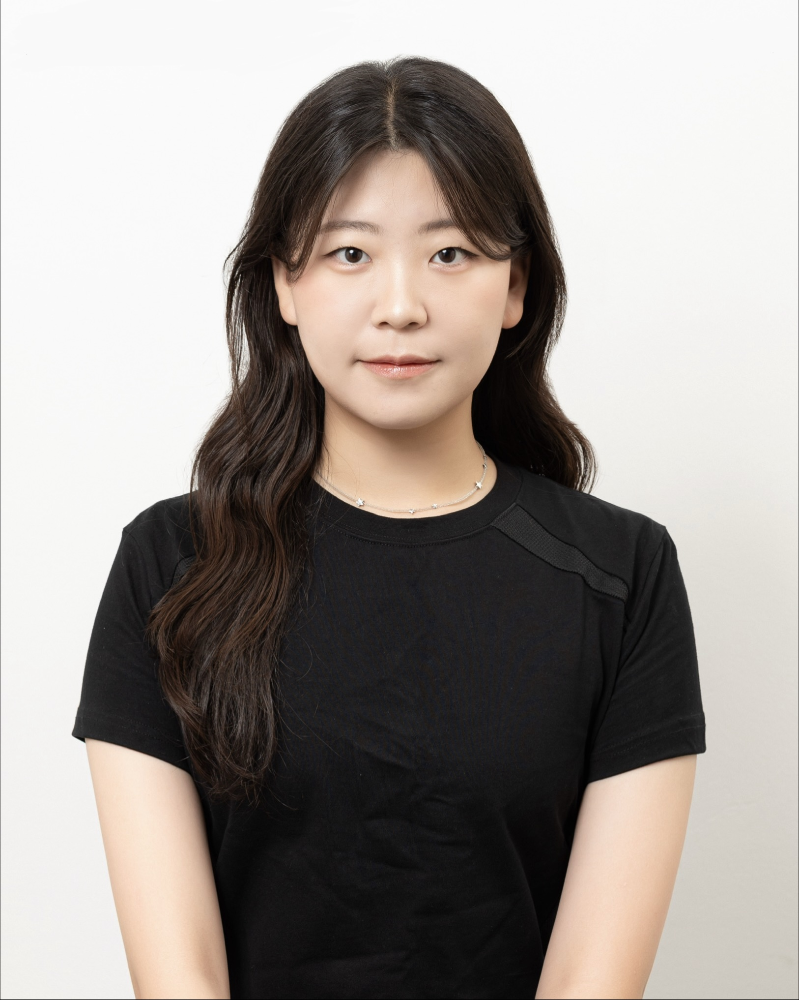
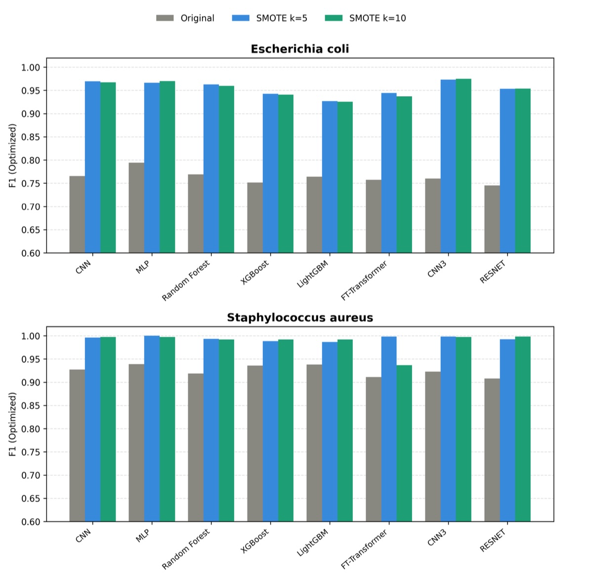
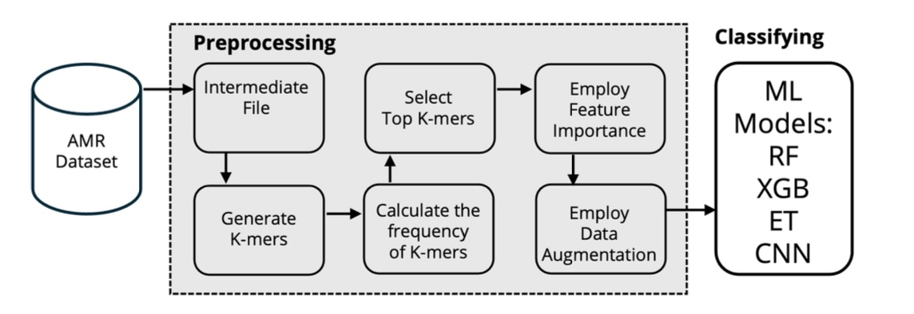
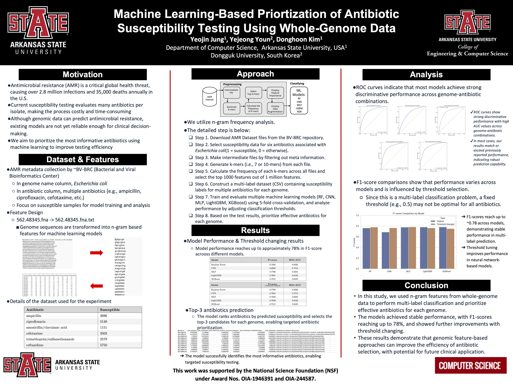
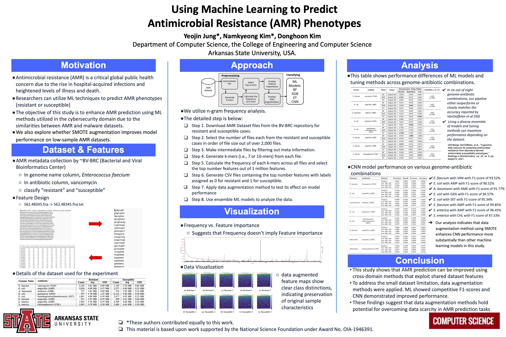
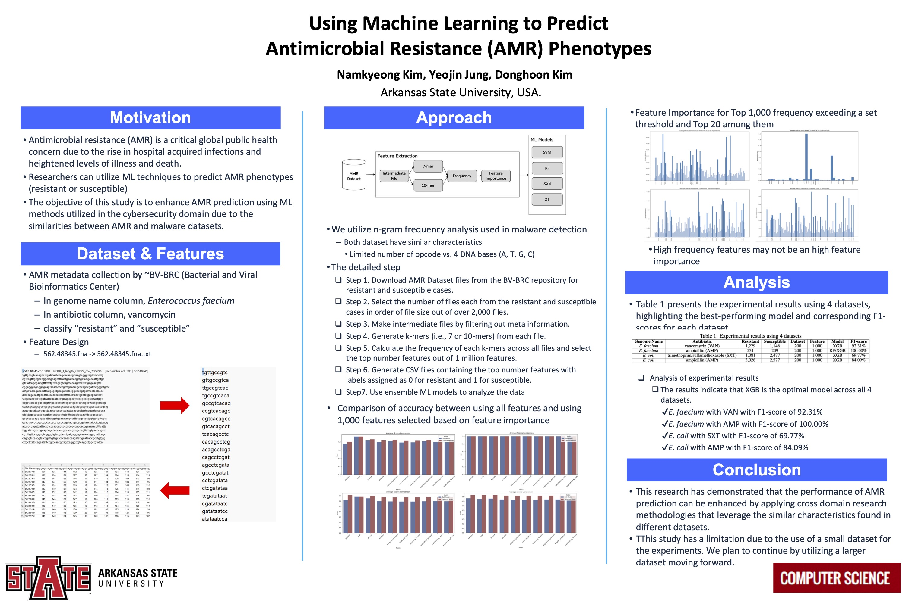

Yeojin Jung
I am interested in developing intelligent systems that can understand visual information, reason about human and object interactions over time, and connect visual understanding to intelligent decision-making and action.

About Me
I am a Computer Science undergraduate at Arkansas State University, graduating in December 2026. I am currently an undergraduate research assistant advised by Dr. Donghoon Kim.
My research experience has focused on machine learning and deep learning for antimicrobial resistance prediction using bacterial whole-genome sequencing data. Through this work, I have gained experience in data preprocessing, model development, experimental design, evaluation, and scientific writing.
My current research interests include Computer Vision, Video Understanding, and Embodied AI. I am particularly interested in understanding human and object behaviors from visual information and modeling how actions and interactions evolve over time.
Publications

Acceptance rate: 19.48% (480 / 2,463)

Research Experience
Feb 2026 – Present
- Conduct research on antimicrobial resistance prediction using bacterial whole-genome sequencing data.
- Develop and evaluate machine learning and deep learning models for antimicrobial resistance prediction.
- Design genomic feature extraction, preprocessing, augmentation, and model evaluation pipelines.
- Conduct experimental analysis and contribute to research publications and presentations.
Presentations

Presented undergraduate research on antimicrobial resistance prediction using machine learning and deep learning.

Presented research on antimicrobial resistance phenotype prediction using bacterial whole-genome sequencing data.

Presented undergraduate research on antimicrobial resistance prediction using machine learning.
Selected Projects
Developing an AI-based wardrobe application that recommends outfits using clothing images, weather conditions, and event context. Implemented zero-shot clothing classification using CLIP and an outfit recommendation pipeline.
Developed and evaluated multi-label machine learning and deep learning models including CNN, MLP, FT-Transformer, ResNet, and tree-based models for predicting resistance to multiple antibiotics.
Led a student team in developing a computer vision system for analyzing abnormal vehicle behavior from CCTV footage using vehicle detection, tracking, and trajectory analysis.